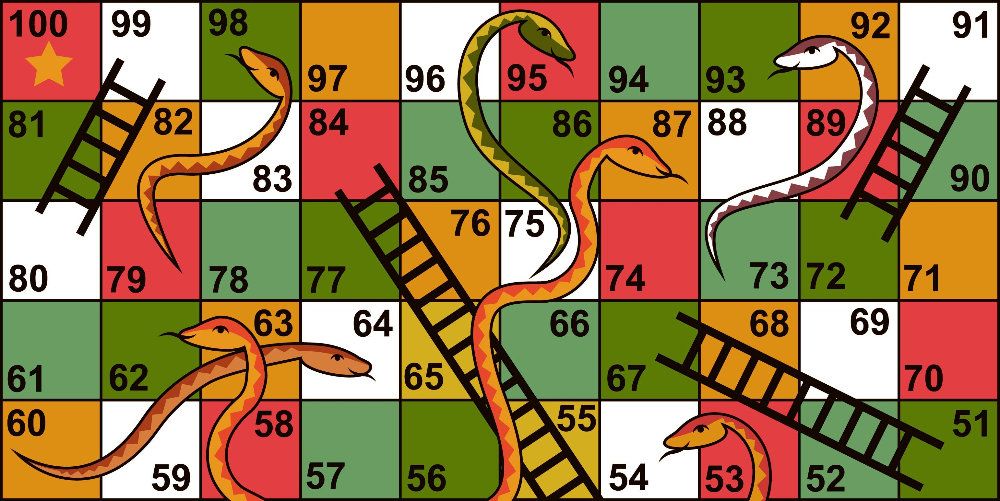

Abracadabra and Gaming


Knowing where the words and expression we use in our everyday life if for sure important because the way we speak teach us how our brain works and the words and sentences we use have footprints of our relationship as human beings like how our DNAs can help us know with who we relate with. I had the opportunity to learn where the word abracadabra comes from by reading this article written by Seth Godin titled abracadabra because I just clicked on the link into it and discovered this resourceful website worldwidewords.com. Like how a website visitor does when he or she lands on a specific web page, consumed another page about Back to the square one which in turn taught me where this expression comes from and reminded me of this game Snakes and Ladders
I used to play this game when I was a kid. All of this turned to be an interesting game mechanic to experiment with. To point out that reading blogs like the blog of Seth Godin can bring creative ideas. That’s why I said that personal blogs still matter.
PS: You can take this short article as a Thank Link article like this one and did not use Abracadabra to write it. I knew Aramaic because of Arabic and my interest in language and how they shape our minds and remember that I have already said what we get from reading here.